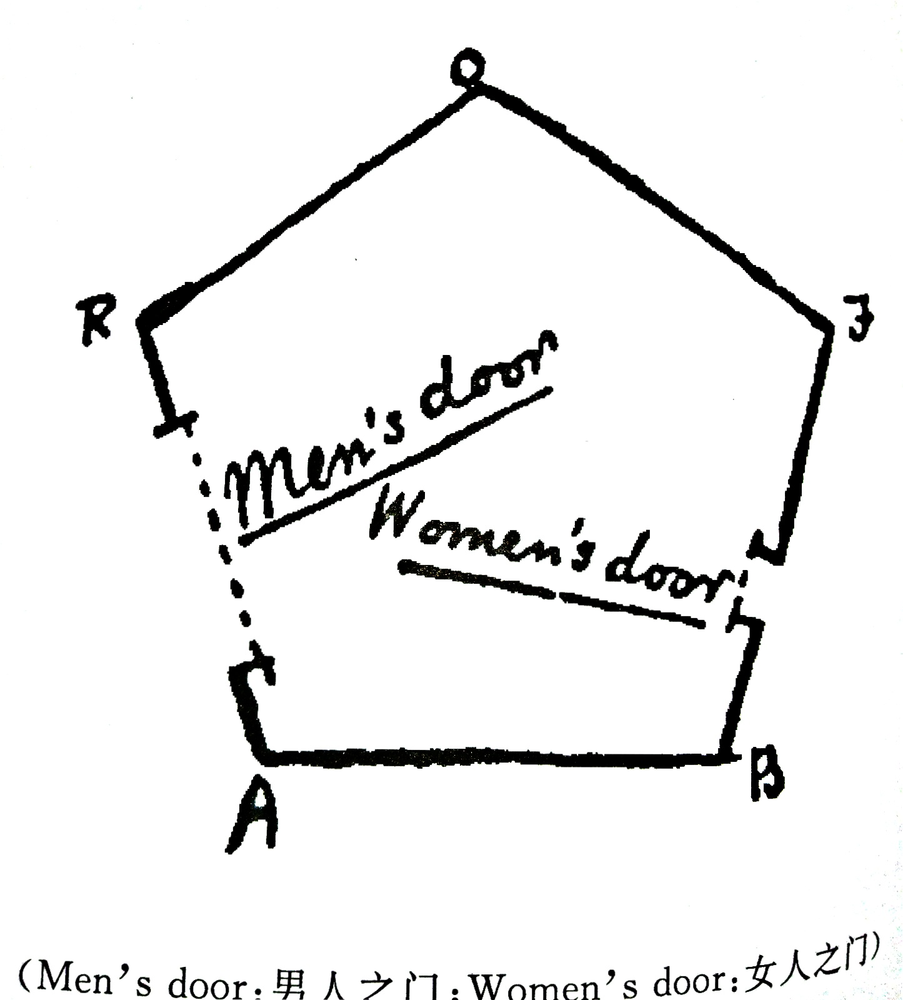
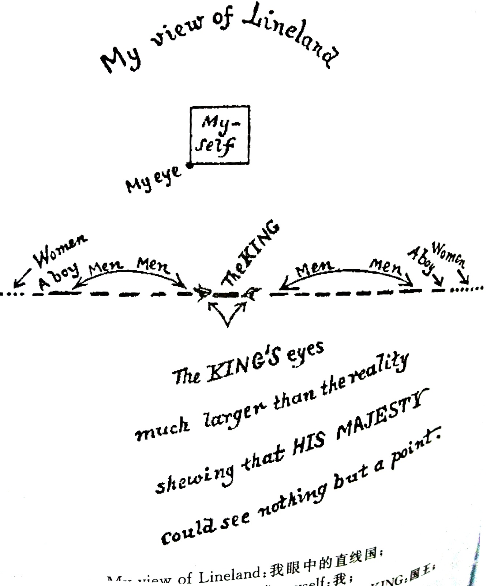
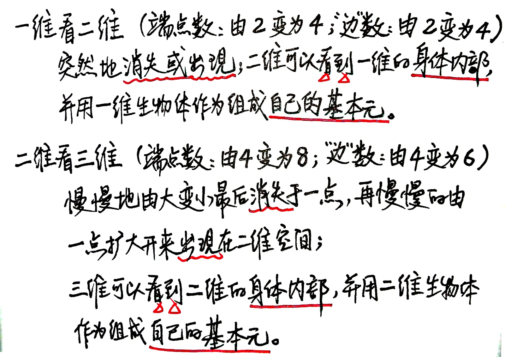

平面国:一个多维的传奇故事
作者： [英]Edwin A.Abbott
推荐理由：
多维空间科幻小说的 巅峰之作。本书是严谨的逻辑与无穷的想象的完美结合。
21世纪最宝贵的是人才，人才最需要具备的素质是创新，小说《平面国》是培育创新思维的第一奇书。
有一个国家，名叫平面国，在这个国家里，一切都是平面的，国土是平面的，山川河流是平面的，连人也是平面的。
人分为：最平穷卑微的是等腰三角形，最高贵的是圆形，最让人害怕的是直线等等。平面国里的房屋建造，行走方式，
辨认方式以及阶级斗争都自成一体，妙趣横生。
当平面国的人遭遇零维国、一维国、二维国和三维国的生命后，他们开始了大争论：平面国的人启发一维国上的人左
右移动被视为一派胡言，三维世界中的人启发平面国的人上下移动也未成功，而零维国的人干脆认为他自己就是整个
世界！
读后感：
本书以拟人化的方式给我们全面地展现了一个 从零维到一维再到二维最后到三维 的整个人类所能够理解的所有维度世界
内所发生的一系列有趣的事情。同时给我们讲述如何站在二维世界(平面国)的视角来理解所谓的高等空间(空间国)以及低
等空间(直线国和定点国)，感觉给我的启发很大。主要思想是利用低等空间上的物体在一个新的维度方向上的移动来获得
一个处于高等空间中的物体，同时处于高维度上的生物可以在新的维度上看透整个在低维度上所发生的事情，从某种意义
上来说高维度生物就可以充当低维度生物所理解的神明与上帝的角色。换一个角度思考那个新维度的方向——其实可以理
解为我们眼睛所看不到的方向，处在这个方向上的生物可以看到我们所看不到的东西，对我们的一切都看得了如指掌。
【总之这本书给我开了很多新脑洞，很有意思。】
= 本著作出自一个卑微的平面国国民，在他未被引领至认识三维的奥秘前，他只熟悉二维世界！
他期望在天上领域的居民，能够和他一样追求更高更高的境界，去了解四维，五维，甚至六维的奥秘；
从而可以拓展想象力。在人类这一卓越民族中，希望通过本著作能 尽可能的为他们培养最稀有和极度优秀的天赋 —— 谦逊！
= 冯友兰评述翻译本与原版书之间的关系：
任何翻译的文字，说到底只是一种解释。当我们把《老子》书中的一句话译成英文时，我们实在按照自己的理解来阐述
它的含义。译文通常只能表达一种含义，而原文却可能还有其他层次的含义。原文是提示性质的，译文则不可能做到这
一点。于是，原文中的丰富含义，在翻译过程中大部分都丢失了。
所以：如果实在看不了英文原版，有中译本总比没有好，由此可以引起读者的兴趣去阅读原著，从而仔细思考玩味，
从原版中再找出自己不同的领会，便是更佳的。
= 我们常常自以为高人一等，嘲弄别人的封闭无知，却不知道自己其实也是同样封闭无知。因此，我们必须时常提醒自己，
要虚怀若谷，要能够包容别人。
第一部分 这个世界【描述平面国本身的社会状况】
1. 平面国的本质
= 无论他具有什么形状，在平面国的人看来他都只是一条线段，当他走近时我们看见他的线段会变长，当他远离时，我们
看见他的线段会变短。
2. 平面国的天气和房屋
= 平面国在任何时间任何地方都享有光，这种光是从三维空间里照射进去的，但是这一点一直不能被平面国的居民所理解；
= 平面国在固定时段必定有来自北方的降雨；
= 同时平面国的房屋都至少是五边形以上，因为三角形和正方形的角很尖锐，容易对人造成伤害，所以法律禁止建造这样
的房子。
 （平面国的房屋结构）
3. 平面国的居民
= 女人是 直线；
身份底下阶层的人是 等腰三角形 (顶角越尖锐，说明这个人的地位越低下)；
中产阶级是 等边三角形；
专业人士和绅士 是正方形和五边形；
更高级的是 贵族，贵族又分级别，初等贵族是六边形，随后随着多边形边数的增大贵族的等级也会增高；
最高级别的 贵族 是圆形阶层(或称为 教士阶层)，他的边数已经足够多到可以将形状拟合成为一个圆。
= 利用人们压抑不了的对上升至较高社会地位的无穷企望，便几乎可以把叛乱消灭于摇篮之中。
[联想 中国古代的科举制度，其中上层社会里制定制度的人不免也会有这种考虑在里面。]
4. 平面国的女性
= 如果说尖锐三角形的士兵可怕，那么女人这种直线(两头尖锐)就更加可怕了。
= 女人的破坏本能是上天众多安排中的一种，既可以抑制过多的人口，又可以将革命事情扼杀于萌芽状态。
5. 在平面国辨认人的方法
= 第一种是利用 听觉，通过声音辨认朋友同时还可以分辨不同阶层，但通常只能分辨较低的几个阶层。
= 第二种是利用 触摸，但是对于多边形的边数超过十以上就真的很难区分了，同时通过触摸也容易造成伤害。
6. 以视觉辨人
= 触摸辨别方法是“低下阶层采用的主要方法”，而只有社会的高层人士在气候温和的地区，才会使用视觉辨别的方法。
= 视觉辨别的方法需要利用到 二维世界里面的雾，当一个物体离我们较远时会显得颜色比较暗淡，较近时颜色会显得比较
明亮，所以基于此再加上良好的教育便可以通过一个物体的明暗变化推知这个人所处的等级。
7. 不规则图形
= 这个社会要求各个阶层的人必须是规则的，一旦他在出生时不规则，如果不能通过矫正手术等措施矫正过来，那么他
必须得被处死。【具体原因是这些不规则的人可以通过伪装或者是其他手段来损人利己，成为社会的不安定因素】
8. 古时涂色的习俗
= 人们可以通过为自己的边上涂色，从而利用颜色既可以展示绚丽的色彩又便于别人的辨认。于是“彩色人”就渐渐的流行
开来。但是女人和教士由于没有边的概念，所以一直能保持纯净不受油彩的污染。
9. 全民颜色法案
= 这项法案要求所有阶层的人都要涂上颜色，包括教士和女人，以向颜色表示敬意。
有人反对这样要求，认为教士和女人没有边，不能涂色。
= 这个法案是由一名狡猾的不规则的圆形提出来的。这个法案置我们于极度危险之中，因为年轻的女士会被错认为教士。
这个法案有两大企图：1. 希望拉拢女性，增加这个社会的危险元素；2. 要使圆形阶层的意志逐渐消沉。
(其实这个法案是一个阴谋。)
10. 镇压颜色叛乱
= 圆形首领 把那些支持和反对颜色法案的人都召集在一起开了一个全员会议，
他演讲的策略是：先采取让步策略 承认颜色法案，接着再向世人展示一旦实施颜色法案所带来的利弊得失，最后再通过
武力配合终于镇压住了这次持续了三年的颜色叛乱时期。
= 实施颜色法案的缺点：实行之后，因为阶级区分不再存在，那种想要提升自己阶层的崇高理想也会消失，整个社会将会倒
退，最终沦落到犯罪阶层的手中。
11. 平面国的教士
= 进入正题(关于我是怎么样认识三维空间的奥秘的)之前，要先介绍一下平面国的中流砥柱，全民万分敬仰甚至崇拜的对象
即 平面国的教士(圆形人士)。他们是整个国家的统领人。
12. 教士的教义
= “身体形状最为重要”，身体形状决定人的一切。
= 圆形阶层统治下的社会制度的缺点：是他们和女人之间的关系。
具体来说：1. 一方面社会制度要求：如果没有经国家认证的身份那么该女人是不能结婚的；但另一方面社会的各个阶层对
这个事情又都不在意，这最终有可能导致圆形阶层的消失；2. 女人不应该接受任何与智力有关的教育，这不仅导致女性智
力的下降，同时男性的智力也在随之逐年下降。
第二部分 其他世界【描述正方形如何认识立体物体和三维空间】
13. 梦游直线国【低等世界】
= 生活在直线国里面的人，相互之间只能看到一个点，他们辨别他人的性别和年龄只能凭借他们各自所发出来的声音。
他们一日为邻，一生为邻，没有人可以从别人的身旁走过，直至死亡两人才会分开。

= 直线国里的两心结合不在于相邻，而孩子的诞生是他们之间最重要的事情，他们之间的婚姻圆房都只能够
依靠声音功能和听觉 才能够完成。
= 在直线国里生活的国民，已经把整条直线当成了他们的宇宙，其他所有别的地方在他们的脑子里完全无法理解。
14. 我企图说明平面国的本质，但徒劳无功
= 当我企图向直线国国王讲述 左右 这两个方向的时候，他们根本就理解不了；在二维的世界里，我们分辨点和线
完全可以依赖视觉，直接看到；但是在一维世界里，他们只能通过听觉来判断国民是直线还是点，而且他们也无
法理解怎么可能用视觉可以看到。那所谓的线段其实是他么身体的内部！
= 当正方形向直线国国王演示向左右移动时，国王以为他要么就是没动要么就是突然消失突然的再出现，这有点像
巫术。从另一个角度来说：正方形在一维世界里就是所谓的上帝！
= 当他发现解释不了的时候，他怒了，吼道：
你这执迷不悟的蠢材！你以为你是存在中最完美的人，其实你却是最不完美的、最低能的。虽然我比你无限优
越，但与平面国的杰出贵族相比，我只是微不足道的。我从平面国来到此地的目的是要启发你，使你不至于那
么地无知！
这就是高维空间的生物看待低维空间内生物的结论——他们是多么的低能。
15. 从空间国来的陌生人【高等世界】
= 当正方形回到了自己的二维世界时，由于孙子的一句“既然3^2代表平面上的一个边长为3的正方形的几何意义，那么
3^3一定也有什么独特的几何意义”使得正方形又再次的陷入了沉思。
= 在他沉思的时候，一个来自三维世界的立体圆球来到了他的世界。
16. 陌生人企图用言语令我明白空间国的奥秘，但徒劳无功
= 陌生人宣称自己来自空间，而正方形也宣称自己来自空间，但是他对空间的理解却只是："无限的长度和宽度"。
= 当三维的圆球 试图向二维世界内的 正方形 解释所谓的第三维(高度)的时候，发生了一段很有趣的对话，最终我们总结
一下，低维度是怎么看待高维度的：

17. 当圆球不能用言语说服时，他如何诉之行动
= 三维空间里的生物可以看到二维空间里一切的东西，包括你认为已经密封好的东西的内部。
= 当圆球最终还是不能用言语说服正方形的时候，他所做的决定就是：将正方形带离他所在的二维空间，而把他带到自己
所身处的三维空间里。
18. 我如何到达空间国，在那儿又看到了什么
= 当正方形站在三维空间里面看自己的二维国家时，亲眼的看到了家中的各项细节，那些迄今为止他只能够以理解推测得
到的印象，他也亲眼看到了那些五边形的房屋 以及 各种形状的人。在这里他可以看到一切平面图形及其内部！
此时的正方形感叹："看啊，我 好像已经成为神明 了，因为我国最有智慧的人说，只有神明才能够看见万物，即是拥有
无所不见的能力。"
19. 虽然圆球已经让我看到空间国的其他奥秘，我希望知道更多，结果如何
==== 脑洞大开 ====
【海市蜃楼 到底是幻觉还是来自四维世界里的更高级的生物 在三维世界里所留下来的截面？】
【在我们之上一定有更高、更纯洁的地方，在那里我们可以看到空间国的东西的内部！】
【联想《宇宙的琴弦》第四个维度如果有，它可能是卷缩的！
我们如果身处四维世界 再反过头来回看三维世界的实体，我们应该可以看到自己身体的内部，
正是 因为我们肚子里面没有眼睛，所以处在三维世界的我们看不到自己的内部构造。】
【在这个新的四维世界里，考虑几何体，它是以16个超立方体角为端点，8个立方体为"边"的更加完美的几何体。】
20. 圆球在梦中鼓励我
= 在梦里，正方形梦到自己在圆球的带领下，来到了 "定点国"，这是存在的最深处，一个没有维度的深渊。
= 在这个定点国里，只有一个东西，他本身就是"一"，也代表着"所有"，他非常自满！但是这种 "自满"就是邪恶，就是无知！
所以我们 要追求知识，同时要教导其他人追求知识，我么 要懂得谦虚，不要骄傲自满！
21. 我尝试教导 孙子 三维的理论，有何成果
= 孙子成长在对圆形绝对尊崇的环境中，所以他立马改变了自己以前对 3^3 具有某种意义的言论。
再加上正方形无法在二维世界里演示向上这个动作，所以孙子以为正方形在逗弄他，所以最终正方形的第一次尝试失败了。
22. 我用其他方法传播三维理论，结果如何
= 尝试通过写作的方式来宣讲他的三维理论，写了一个著作名叫《从平面国到幻想国》，这里为了避免可能触犯平面国的法
律，所以正方形将自己真实经历的三维空间以幻想国所代替。
= 这篇回忆录，希望能够流传下去，以激励生活在某些维度空间中的人民有一些叛逆精神，不再甘于被困在某个有限维的国
度里。